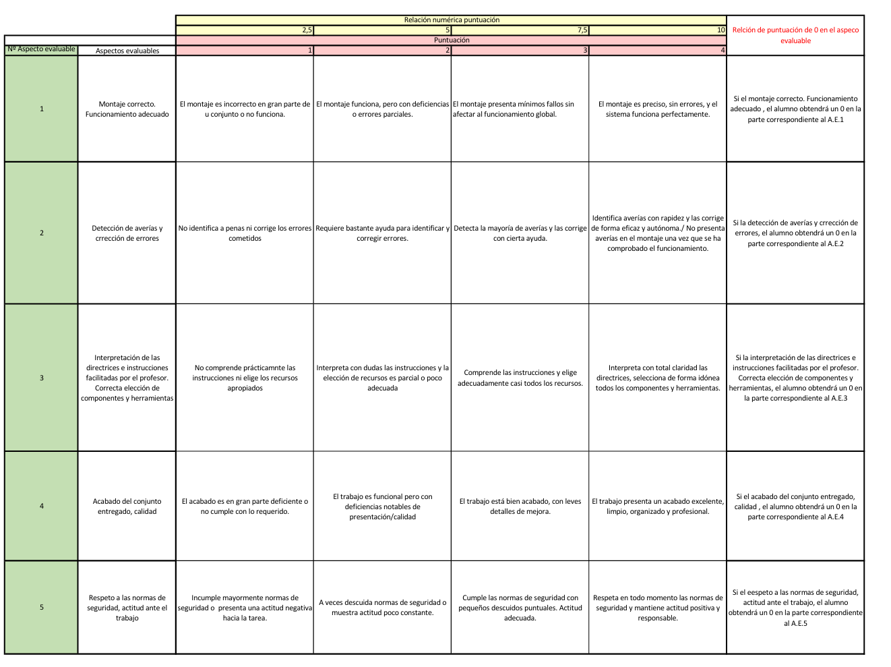
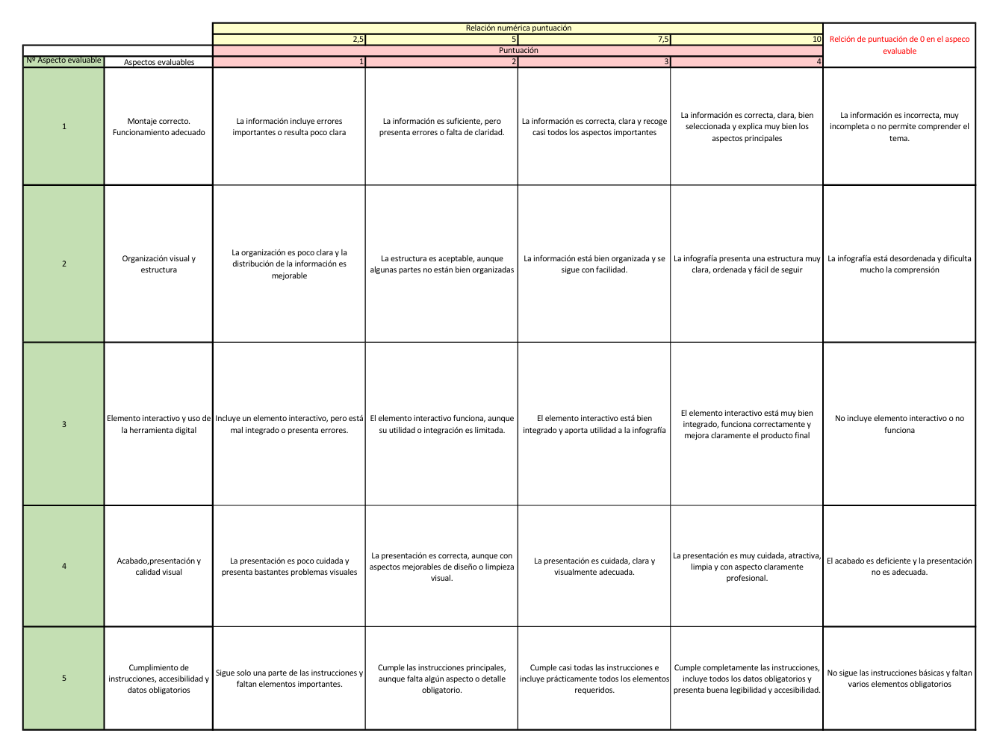
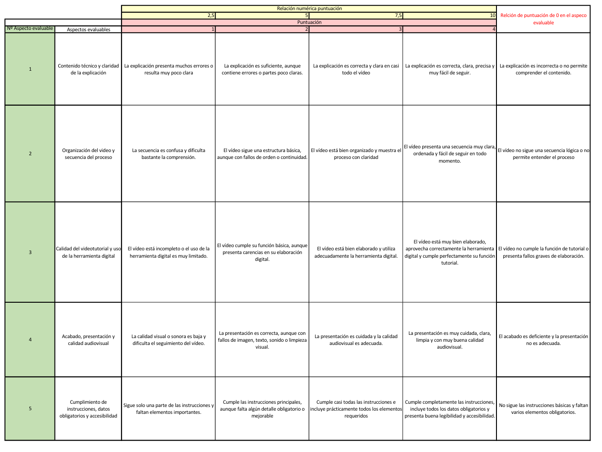

Presentación
En esta actividad vamos a trabajar la fibra óptica de una manera práctica, aplicada y cercana a situaciones reales del ámbito profesional. A lo largo de las sesiones, iremos viendo los conceptos básicos, los materiales y herramientas que se utilizan, el procedimiento de trabajo y algunas normas importantes de seguridad. Además, todo lo que aprendamos en clase lo vais a transformar en productos digitales, para que no solo sepáis hacerlo, sino también explicarlo de forma clara y visual.
Como producto final, trabajaréis en equipo para elaborar en Canva una infografía interactiva y un vídeo tutorial relacionados con la práctica realizada y con los contenidos trabajados sobre la preparación y fusión de la fibra óptica. Con estas tareas podréis reforzar lo aprendido, mejorar vuestra competencia digital y aprender a presentar información técnica de una forma más profesional, ordenada y útil, algo muy importante tanto en el aula como en vuestro futuro laboral.
¿Cómo vamos a trabajar?
Durante esta actividad vamos a trabajar de forma práctica y organizada, combinando los contenidos teóricos con el trabajo en el aula-taller y la elaboración de productos digitales. En una primera sesión nos centraremos en los conocimientos básicos sobre la fibra óptica, para comprender mejor sus elementos, las herramientas que se utilizan y las fases del proceso de trabajo. En la segunda sesión, ya en un contexto más práctico, trabajaréis directamente con las dos fusionadoras disponibles en el aula, observando y realizando las distintas fases del procedimiento.
Se trabajará en grupos de 3 personas, de manera que podáis participar de forma activa y aprovechar bien el material disponible. Mientras se desarrolla la práctica con las fusionadoras, iréis recogiendo información, imágenes y fases del proceso para poder elaborar después en Canva una infografía interactiva y un vídeo explicativo. De esta forma, además de aprender a realizar la práctica, también trabajaréis cómo documentarla y presentarla de manera clara y visual.
Temporalización
La actividad se desarrollará en dos sesiones de 120 minutos cada una de ellas:
Sesión 1: Introducción teórica al conformado de fibra óptica:
- Explicación de los conceptos básicos sobre la fibra óptica.
- Identificación de materiales, herramientas y elementos principales.
- Análisis de las fases del procedimiento del trabajo en el taller y durante el desarrollo de los recursos digitales.
Sesión 2: Trabajo práctico con fusionadoras y recopilación del material para la realización de los recursos digitales:
- Organización del grupo y reparto de tareas.
- Uso de las dos fusionadoras disponibles en el taller.
- Observación y realización de las distintas fases del proceso de conformado y fusionado de fibra óptica identificando sus partes.
- Recogida de imágenes, información y pasos del procedimiento.
- Selección de material necesario para elaborar la infografía y el video tutorial.
Trabajo final: Con la información recogida en la sesiones, deberéis realizar en Canva:
- INFOGRAFÍA INTERACITCA
- VÍDEO TUTORIAL
Productos digitales a elaborar
1. Infografía interactiva en Canva
- Relacionada con la práctica realizada, relacionando los contenidos trabajados en la primera sesión.
- Deberá presentar la información fotográfica y descriptiva de forma clara visual y ordenada
- Incluirá además u código QR que redireccione vuestra infografía al video tutorial creado.
2. Video Tutorial en Canva
- Deberá mostrar o explicar las fases del proceso, los materiales utilizados o las ideas más importantes trabajadas en clase.
- Tendrá un formato claro, breve y bien organizado.
- Deberá contener algún corte que diferencie cada una de las frases del proceso de conformado y fusionado de la fibra óptica.
Entrega
Entrega de la infografía interactiva:
Se entregará en la carpeta denominada infografía interactiva de la plataforma educativa Teams:
- En formato pptx
- El nombre del archivo será: SdA_FO_Apellido1_Nombre1_Apellido2_Nombre2_Apellido3_Nombre3.pptx
Entrega del vídeo tutorial:
Se entregará en la carpeta denominada video tutorial de la plataforma educativa Teams:
- En formato mp4
- El nombre del archivo será SdA_FO_Apellido1_Nombre1_Apellido2_Nombre2_Apellido3_Nombre3.mp4
Evaluación
RÚBRICA ACTIVIDAD PRÁCTICA

RÚBRICA INFOGRAFÍA INTERACTIVA

RÚBRICA VIDEO TUTORIAL
